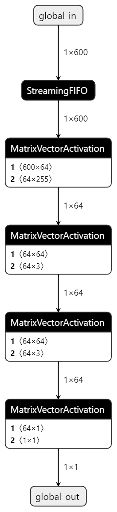

UL3524 Ultra Low Latency Trading |
FINN MLP Design¶
The base for the FINN MLP design is taken directly from the opensource Cybersecurity-MLP example design.
For the FINN Latency reference design, the Cybersecurity-MLP example is modified as detailed in the following section.
This reference design is not intended to be a FINN tutorial.
To learn about using the FINN compiler, quantisation and re-training with Brevitas, and generating customised FINN IP blocks, please refer to the official FINN Documentation.
Modifications¶
Targeting a specific part describes how to generate FINN IP for the UL3524.
Improving performance through folding adjusts the PE and SIMD parameters for each layer to achieve the desired latency based on available FPGA resources.
Targeting a specific part¶
While FINN does provide support for various platforms, it can also target specific parts. In the case of targeting a specific part, a stitched IP is generated and can then be integrated into a larger Vivado project.
To configure the target part, the design build script needs to be modified. Specifically, change the value of fpga_part. In this example, the UL3524 part xcvu2p-fsvj2104-3-e is being targeted.
For further information on FINN build configurations, see the FINN API.
Improving performance through folding¶
One of the key features of FINN is the ability to fully unfold a network to improve performance and optimize a model to take full advantage of the available resources on the FPGA. This is achieved by adjusting the parallelization parameters (PE & SIMD). See the FINN Tutorial on Folding for a walkthrough of exactly how this works.
The model generated by FINN looks like this:

Each layer has been translated to a MatrixVectorActivation(MVAU) IP block. The input and output of each layer can also be identified which is necessary for folding.
When folding, there are some rules which must be considered. In the case of MVAUs, the input and output sizes (MW and MH respectively), PE and SIMD are subject to the following constraints:
MW % SIMD == 0
MH % PE == 0
Total folding for an MVAU is defined as:
Total folding = (MH/PE) x (MW/SIMD)
Ideally, the total folding for each layer would be 1 meaning each layer should only take 1 cycle to complete.
E.g. for L1:
MW = 600
SIMD = 600
MH = 64
PE = 64
Total folding = (64/64) x (600/600) = 1
This is unfortunately not currently possible due to a HLS limitation found during the development of this example. See the Limitations section for further details.
The final folding configurations for this example can be found here. These are the values used to generate the prebuilt example. They are pulled into the build in the build script at this line. Either modify the json file directly or point to a new config if changing the parameter values.
Limitations¶
While building this example, a number of limitations where identified:
There is a Vitis HLS bitwidth limit which prevents fully unfolding this model. The constraint is the following:
SIMD*PE*Weight_width < 8192
To fully unfold this model, the first layer alone would need SIMD=600 and PE=64 which is far beyond this constraint. This is a known issue and will hopefully be resolved in the near future.
FINN generates a number of reports based on estimated results. While these can be a useful indicator, they provided to be very unreliable/inaccurate during development. This is being investigated by the FINN team.
Copyright © 2020–2023 Advanced Micro Devices, Inc